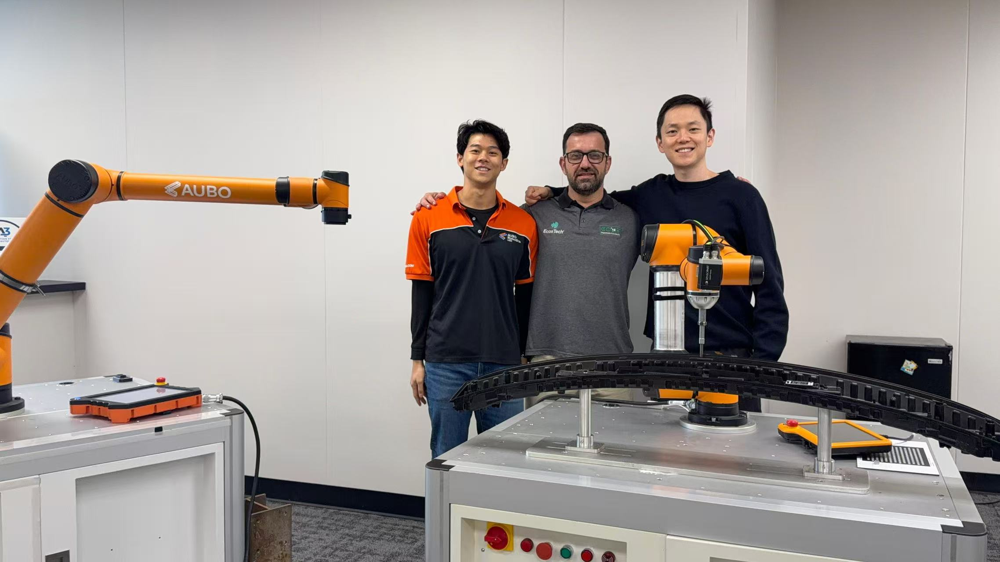
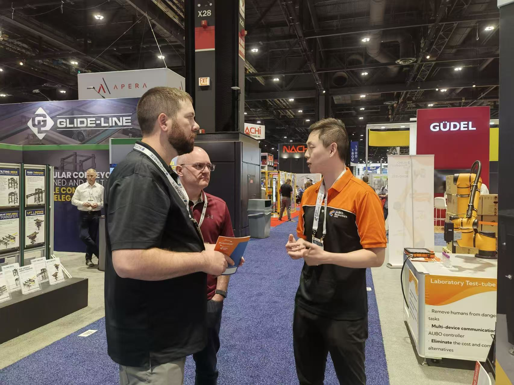
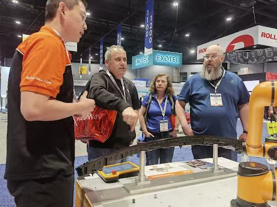
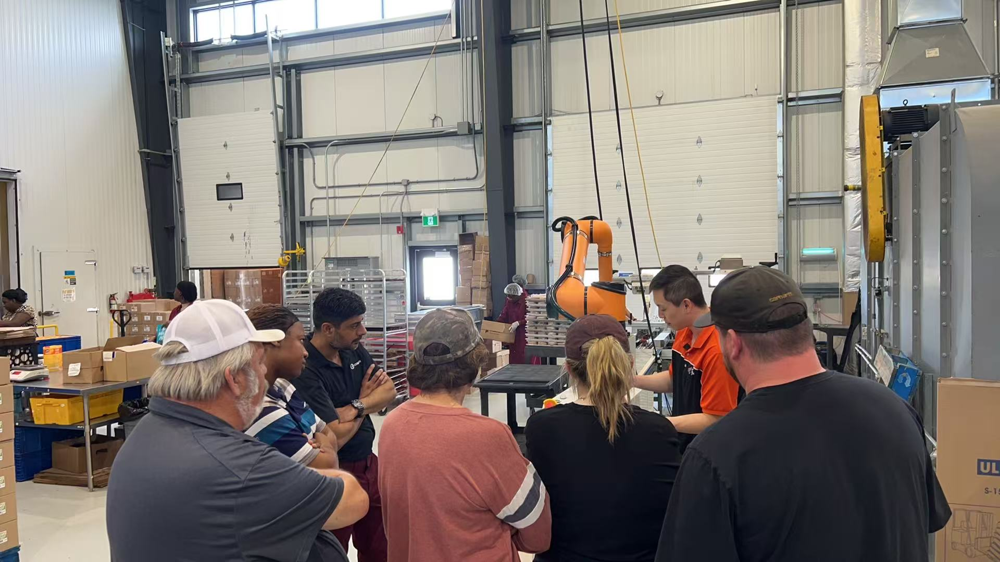

AUBO Robotics USA
Robotic Application Lead · Business Development · Feb 2024 – Present
Technical Work
A lot of the conversations I had with manufacturers started with them knowing something wasn't efficient but not quite knowing where automation fit. The bottleneck was different every time.
For welding companies it was almost always labor — it's genuinely hard to find qualified welders, so companies end up turning down jobs they can't staff. A cobot welding cell doesn't replace welders; it frees your best ones from the repetitive joints so they can focus on the higher-value work. For machine tending, operators were spending most of their shift just loading and unloading CNC machines or presses — time that could go toward something that actually requires a person. For palletizing, it was physical strain and end-of-shift fatigue causing errors at the worst possible point in the line.
For vision-guided bin picking, the challenge was unorganized parts — manual picking from a bin is slow and inconsistent, and vision systems let the robot handle that randomness. For quality inspection, it came down to repeatability; people get tired and miss things, and a defect that slips through has real downstream consequences. Screwdriving was similar — torque consistency is hard to maintain manually over thousands of cycles.
The engineering challenge across all of it was the same: figure out exactly what the robot needs to sense and respond to, then set up the right communication between everything — the PLC, the end-of-arm tooling, any vision system, and the robot controller itself.

Role Progression
My first year was all about getting hands-on. I learned to program cobots for everything from vision-guided bin picking to welding, and quickly realized the role was as much about understanding a customer's business as it was about the robot — if you can't make the financial case, the project doesn't happen.
After a year, I moved into an Applications Lead role. The shift was mostly about being more selective — not every automation opportunity is a good one to take on, and I started putting real thought into which projects were actually set up to succeed before committing to them.
My role kept expanding into business development — building out our partner network, figuring out which channels were worth investing in, and eventually building a small team to scale our outreach using AI and automation tools.
Building the Ecosystem

One thing I learned pretty fast: just signing a new distributor or integrator doesn't do much on its own. If they don't fully understand the product and how to talk about it with customers, they're not going to close anything. So a big part of my role became the training side — making sure partners could not just demo the robot, but have the full conversation about where it fits and why it makes sense for that specific customer's situation.
Over time I also got more data-driven about which partners and channels were actually working, and shifted more energy toward those. I also built a small intern team and brought in AI tools — Make and n8n for automation, and LLMs like Claude and Gemini for lead research and content — which let a small team do a lot more than it otherwise could.
Trade Shows & Road Shows
Trade shows were honestly one of my favorite parts of the job. There's a real difference between explaining what a cobot does and showing someone a live demo — the conversation completely changes when they can see it working in front of them. We did several national shows including Automate, Fabtech, PackExpo, and CES, plus regional events and road shows where we brought the robot out to customer and partner sites.



Biggest Takeaway

Customers who had a bad first automation experience were really hard to re-engage — it didn't matter how good the next proposal was, they were burned. So I started putting a lot of energy into making sure the first project was actually set up to succeed, even if that meant passing on things that looked interesting on paper. The goal wasn't to take every project, it was to make sure the ones we took actually went well.